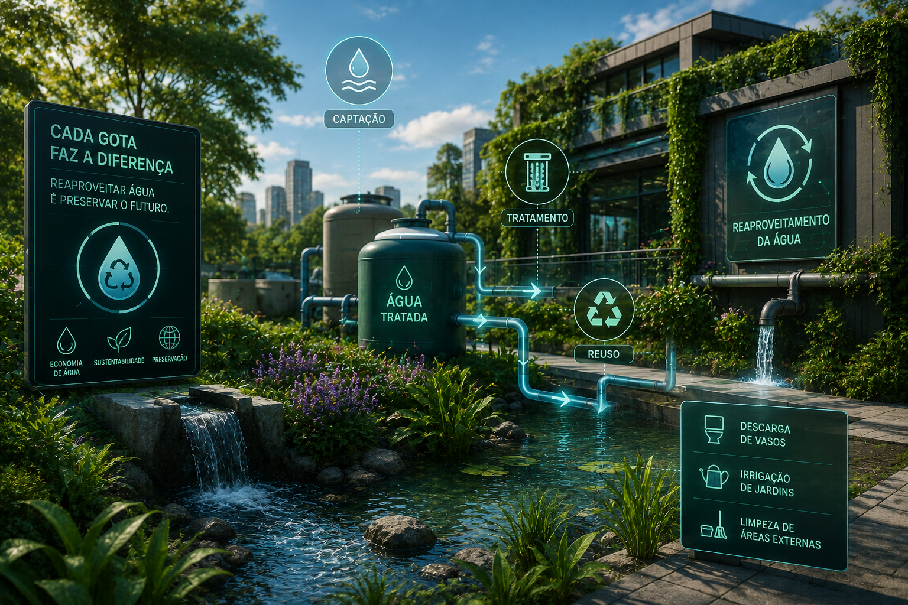

Sistemas modernos permitem reutilizar água e preservar recursos naturais.
O reaproveitamento da água consiste na coleta, tratamento e reutilização de recursos hídricos para diferentes atividades, como irrigação, limpeza de equipamentos e abastecimento de sistemas agrícolas. Essa prática reduz o desperdício, preserva os mananciais e contribui para uma produção mais sustentável.
Sistemas de calhas e reservatórios armazenam água da chuva para utilização na irrigação, limpeza e outras atividades rurais.
Sensores de umidade controlam automaticamente a irrigação, fornecendo apenas a quantidade necessária de água para cada cultura.
Equipamentos realizam o tratamento da água utilizada, permitindo seu reaproveitamento de forma segura e eficiente.
Redução no consumo de água potável
Maior eficiência dos sistemas de irrigação
Aproveitamento da água da chuva em sistemas planejados